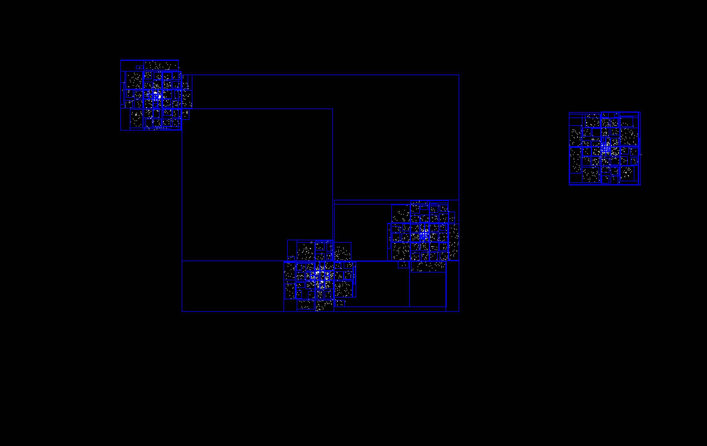

Competition
Parallel Galaxy Evolution Simulator
We implemented a galaxy evolution simulator using two kinds of algorithms: Barnes-Hut algorithm and Morton-Code
based algorithm. Then, we paralleled these sequential algorithms using CUDA and compared the performance
on latedays cluster that has NVidia Tesla K40m.
Major Technical challenges
-
The first technical challenges is to implement the sequential algorithms correctly. We came out with the
second
sequential algorithm based on the idea in this paper that introduces a parallel version of N-body problems.
The reference can be
found here.The implementation in this paper is complex since it involves lots of parallel techniques
to speedup the program. It takes time to understand how the algorithm works and then come out with the
sequential algorithm.
-
Barnes Hut Algorithm - Tree construction on GPU. In host machine setting, we can allocate new tree nodes on-the-fly.
However, in GPU setting, we need to allocate space for the tree ahead of time. We used array-based layout,
instead of pointer based layout. We “Allocate” internal node in the memory and use another array to maintain
the relationship between parent node and children nodes.
-
Barnes Hut Algorithm - Force calculation on GPU. In OpenMp threaded setting, we can simply parallel the processing of different nodes.
However, CUDA supported recursive tree traversal is of very low efficiency and its recursive depth restricted.
Also, unplanned scheduling of nodes onto warps may not have similar traversal depth and since warps execute
in lockstep, serious thread divergence problem heavily strikes the performance of the program. To resolve this,
we have to implement tree traversal with program-managed stack. We also sort the leaf nodes based on their x and y locations.
By so doing, spatially closer nodes are more likely to have similar traversal depth and hence can be processed in the same warp,
resulting in less thread divergence.
-
Barnes Hut Algorithm - lockfree atomic operations to control access to shared data;
special instructions (__threadfence, __syncthreads, and etc.) to guarantee correctness of the program;
persist data in GPU between different iterations;
Preliminary Result
 Figure 1. Barnus-Hut without bounds
Figure 1. Barnus-Hut without bounds
Figure 1 depicts the spiral pattern of galaxy evolution using sequential Barnus-Hut method.
 Figure 2. Barnus-Hut with bounds
Figure 2. Barnus-Hut with bounds
Figure 2 depicts the spiral pattern of galaxy evolution using sequential Barnus-Hut method
and also the
bounds of quad-tree in that iteration during the simulation period.

Figure 3. MortonCode with bounds
Figure 3 depicts the spiral pattern of galaxy evolution using sequential MortonCode method
and also
the bounds of the morton tree during the iteration period. This picture also shows the different bound
pattern
since the way to build the tree is different compared with the previous Barnus-Hut's Quad-Tree.
 as Increase of Galaxy Size.png) Figure 4. performance comparison of the four versions
Figure 4. performance comparison of the four versions
Figure 4 depicts performance of the two algorithms with sequential and parallel version.
 as Increase of Objects per Galaxy .png) Figure 5. performance comparison of the four versions
Figure 5. performance comparison of the four versions
Figure 5 depicts performance of the two algorithms with sequential and parallel version.
 as Increase of Number of Galaxy.jpg) Figure 6. performance comparison of the four versions
Figure 6. performance comparison of the four versions
Figure 6 depicts performance of the two algorithms with sequential and parallel version.
 Figure 7. performance comparison of the four versions
Figure 7. performance comparison of the four versions
Figure 7 depicts performance of the two algorithms with sequential and parallel version.
 Figure 8. performance comparison of the four versions
Figure 8. performance comparison of the four versions
Figure 8 depicts performance of the two algorithms with sequential and parallel version.
 Figure 9. performance comparison of the four versions
Figure 9. performance comparison of the four versions
Figure 9 depicts performance of the two algorithms with sequential and parallel version.
Summary of the Expected Show
-
we'll demo a short video of the galaxy simulation and shows the performance speedup after using parallel
techniques.